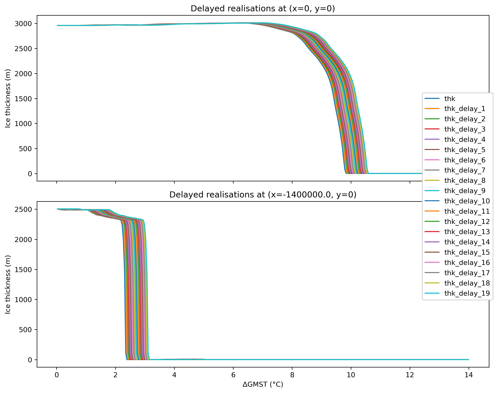
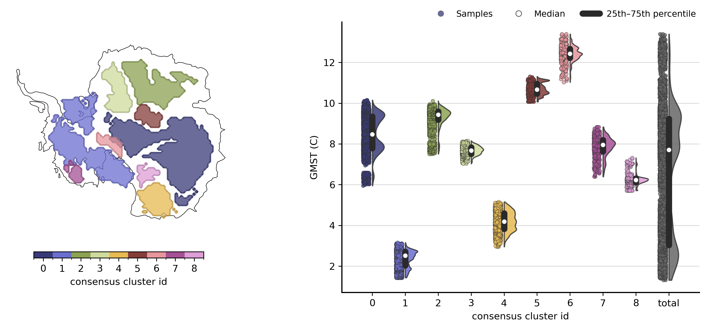
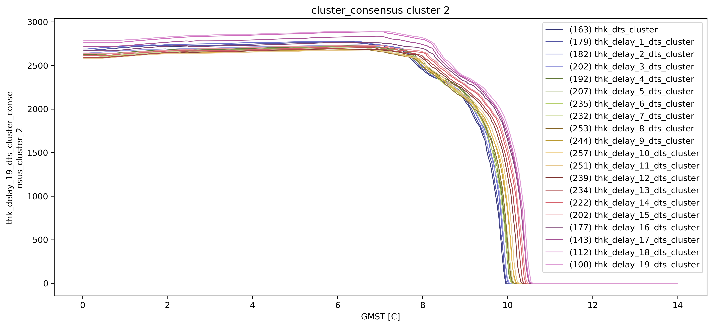
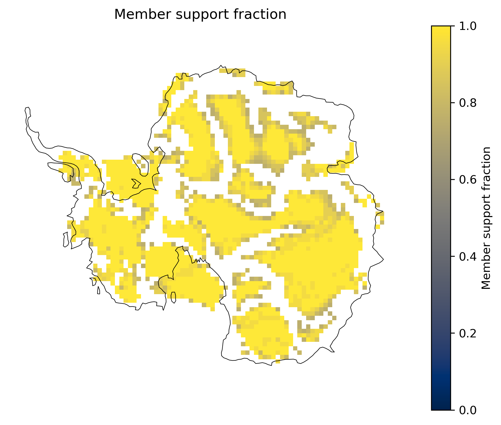
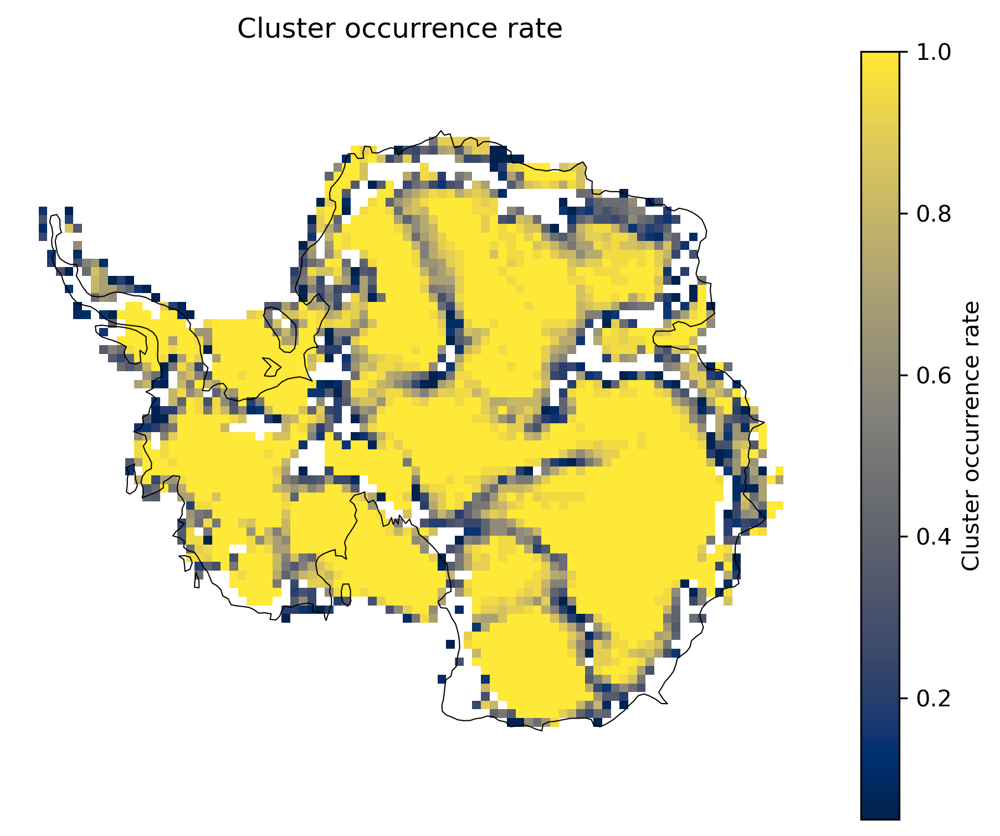

Consensus clustering¶
This notebook demonstrates how to perform consensus clustering using TOAD. After running TOAD on multiple input cluster maps—such as different variables, models, configurations, or ensemble members—you can identify spacetime regions where abrupt shifts are consistently detected across those inputs.
How it works (in brief):
For each input clustering, TOAD builds a boolean mask of native event voxels (grid cells assigned to a non-noise cluster at a specific time).
Each input mask is dilated in time and space by
temporal_toleranceandspatial_tolerance. Dilation is used only when counting member support; the output mask never contains dilated padding.At each native event voxel, TOAD counts how many distinct inputs support it after dilation. A voxel is retained if this count reaches
ceil(min_consensus × n_inputs).Retained voxels are grouped into consensus clusters using the same tolerances for spacetime connectivity. Optionally drop small clusters with
min_cluster_area.
TOAD also stores a companion cluster_consensus_consistency field: the member-support fraction at each native event voxel, even when the voxel falls below the consensus threshold.
Imports¶
import matplotlib.pyplot as plt
import xarray as xr
from toad import TOAD
import numpy as np
plt.rcParams["figure.dpi"] = 300
plt.rcParams["figure.figsize"] = (12, 6)
map_style = {"projection": "south_pole", "map_frame": False, "grid_lines": False}
Prepare data¶
In this example, we use simulated ice-sheet data from Garbe et al. (2020) and create 20 versions of it, each with an increasing time delay (from 1 to 20 time steps). Why delays? Same underlying field, shifted in time—so you can see how temporal_tolerance pools or separates shift events when their timing differs between “models”.
This setup is a convenient toy for exploring how consensus hyperparameters behave; it is not meant to mimic a real multi-model ensemble.
# Helper function for delaying time series
def delay_along_time(da: xr.DataArray, delay: int, time_dim: str) -> xr.DataArray:
"""First `delay` steps = value at time 0; then original shifted by `delay`."""
if delay <= 0:
return da
axis = da.get_axis_num(time_dim)
nt = da.sizes[time_dim]
x = np.moveaxis(np.asarray(da.values), axis, 0)
out = np.empty_like(x)
if delay >= nt:
out[:] = x[0]
else:
out[:delay] = x[0]
out[delay:] = x[:-delay]
out = np.moveaxis(out, 0, axis)
return xr.DataArray(out, coords=da.coords, dims=da.dims, attrs=da.attrs.copy())
td = TOAD(
"/Users/jakobharteg/GitHub/toad/tutorials/test_data/garbe_2020_antarctica.nc",
time_dim="GMST",
)
td.drop_shifts()
td.drop_clusters()
td.data = td.data.coarsen(x=2, y=2, boundary="trim").reduce(np.mean)
# # delay in time steps
for d in np.arange(1, 20):
td.data[f"thk_delay_{d}"] = delay_along_time(td.data["thk"], int(d), td.time_dim)
td
![]() TOAD Object
TOAD Object
Variable Hierarchy:
Hint: to access the xr.dataset call td.data
<xarray.Dataset> Size: 253MB
Dimensions: (GMST: 350, y: 95, x: 95)
Coordinates:
* GMST (GMST) float64 3kB 0.0301 0.0701 0.1101 ... 13.91 13.95 13.99
* y (y) float64 760B -3.016e+06 -2.952e+06 ... 2.936e+06 3e+06
* x (x) float64 760B -3.016e+06 -2.952e+06 ... 2.936e+06 3e+06
Data variables: (12/20)
thk (GMST, y, x) float32 13MB 0.0 0.0 0.0 0.0 ... 0.0 0.0 0.0 0.0
thk_delay_1 (GMST, y, x) float32 13MB 0.0 0.0 0.0 0.0 ... 0.0 0.0 0.0 0.0
thk_delay_2 (GMST, y, x) float32 13MB 0.0 0.0 0.0 0.0 ... 0.0 0.0 0.0 0.0
thk_delay_3 (GMST, y, x) float32 13MB 0.0 0.0 0.0 0.0 ... 0.0 0.0 0.0 0.0
thk_delay_4 (GMST, y, x) float32 13MB 0.0 0.0 0.0 0.0 ... 0.0 0.0 0.0 0.0
thk_delay_5 (GMST, y, x) float32 13MB 0.0 0.0 0.0 0.0 ... 0.0 0.0 0.0 0.0
... ...
thk_delay_14 (GMST, y, x) float32 13MB 0.0 0.0 0.0 0.0 ... 0.0 0.0 0.0 0.0
thk_delay_15 (GMST, y, x) float32 13MB 0.0 0.0 0.0 0.0 ... 0.0 0.0 0.0 0.0
thk_delay_16 (GMST, y, x) float32 13MB 0.0 0.0 0.0 0.0 ... 0.0 0.0 0.0 0.0
thk_delay_17 (GMST, y, x) float32 13MB 0.0 0.0 0.0 0.0 ... 0.0 0.0 0.0 0.0
thk_delay_18 (GMST, y, x) float32 13MB 0.0 0.0 0.0 0.0 ... 0.0 0.0 0.0 0.0
thk_delay_19 (GMST, y, x) float32 13MB 0.0 0.0 0.0 0.0 ... 0.0 0.0 0.0 0.0
Attributes: (12/13)
CDI: Climate Data Interface version 1.9.6 (http://mpimet.mpg.d...
proj4: +lon_0=0.0 +ellps=WGS84 +datum=WGS84 +lat_ts=-71.0 +proj=...
CDO: Climate Data Operators version 1.9.6 (http://mpimet.mpg.d...
source: PISM (development v1.0-535-gb3de48787 committed by Julius...
institution: PIK / Potsdam Institute for Climate Impact Research
author: Julius Garbe (julius.garbe@pik-potsdam.de)
... ...
title: garbe_2020_antarctica
Conventions: CF-1.9
projection: Polar Stereographic South (71S,0E)
ice_density: 910. kg m-3
NCO: netCDF Operators version 4.7.8 (Homepage = http://nco.sf....
Modifications: Modified by Jakob Harteg (jakob.harteg@pik-potsdam.de) Se...fig, axs = plt.subplots(2, 1, figsize=(10, 8), sharex=True)
locations = [(0, 0), (-14e5, 0)] # Example alternative locations, (x, y)
for idx, (x_val, y_val) in enumerate(locations):
for var in td.base_vars:
axs[idx].plot(
td.data[td.time_dim],
td.data[var].sel(x=x_val, y=y_val, method="nearest"),
label=var,
)
axs[idx].set_ylabel("Ice thickness (m)")
axs[idx].set_title(f"Delayed realisations at (x={x_val}, y={y_val})")
axs[-1].set_xlabel("ΔGMST (°C)")
# Create a common legend
handles, labels = axs[0].get_legend_handles_labels()
fig.legend(handles, labels, loc="center right", bbox_to_anchor=(1.0, 0.5), framealpha=1)
plt.tight_layout()
plt.show()

Computes shifts and clusters¶
from sklearn.cluster import HDBSCAN
from toad.shifts import ASDETECT
td.drop_shifts()
for bvar in td.base_vars:
td.compute_shifts(
var=bvar, method=ASDETECT(timescale=(0.5, 3.5)), show_progress=False
)
INFO: New shifts variable thk_dts: min/mean/max=-1.000/-0.226/1.000 using 3589 grid cells. Skipped 60.2% grid cells: 0 NaN, 5436 constant.
INFO: New shifts variable thk_delay_1_dts: min/mean/max=-1.000/-0.226/1.000 using 3589 grid cells. Skipped 60.2% grid cells: 0 NaN, 5436 constant.
INFO: New shifts variable thk_delay_2_dts: min/mean/max=-1.000/-0.225/1.000 using 3589 grid cells. Skipped 60.2% grid cells: 0 NaN, 5436 constant.
INFO: New shifts variable thk_delay_3_dts: min/mean/max=-1.000/-0.225/1.000 using 3589 grid cells. Skipped 60.2% grid cells: 0 NaN, 5436 constant.
INFO: New shifts variable thk_delay_4_dts: min/mean/max=-1.000/-0.225/1.000 using 3589 grid cells. Skipped 60.2% grid cells: 0 NaN, 5436 constant.
INFO: New shifts variable thk_delay_5_dts: min/mean/max=-1.000/-0.225/1.000 using 3589 grid cells. Skipped 60.2% grid cells: 0 NaN, 5436 constant.
INFO: New shifts variable thk_delay_6_dts: min/mean/max=-1.000/-0.225/1.000 using 3589 grid cells. Skipped 60.2% grid cells: 0 NaN, 5436 constant.
INFO: New shifts variable thk_delay_7_dts: min/mean/max=-1.000/-0.225/1.000 using 3589 grid cells. Skipped 60.2% grid cells: 0 NaN, 5436 constant.
INFO: New shifts variable thk_delay_8_dts: min/mean/max=-1.000/-0.225/1.000 using 3589 grid cells. Skipped 60.2% grid cells: 0 NaN, 5436 constant.
INFO: New shifts variable thk_delay_9_dts: min/mean/max=-1.000/-0.225/1.000 using 3589 grid cells. Skipped 60.2% grid cells: 0 NaN, 5436 constant.
INFO: New shifts variable thk_delay_10_dts: min/mean/max=-1.000/-0.225/1.000 using 3589 grid cells. Skipped 60.2% grid cells: 0 NaN, 5436 constant.
INFO: New shifts variable thk_delay_11_dts: min/mean/max=-1.000/-0.225/1.000 using 3589 grid cells. Skipped 60.2% grid cells: 0 NaN, 5436 constant.
INFO: New shifts variable thk_delay_12_dts: min/mean/max=-1.000/-0.225/1.000 using 3589 grid cells. Skipped 60.2% grid cells: 0 NaN, 5436 constant.
INFO: New shifts variable thk_delay_13_dts: min/mean/max=-1.000/-0.225/1.000 using 3589 grid cells. Skipped 60.2% grid cells: 0 NaN, 5436 constant.
INFO: New shifts variable thk_delay_14_dts: min/mean/max=-1.000/-0.225/1.000 using 3589 grid cells. Skipped 60.2% grid cells: 0 NaN, 5436 constant.
INFO: New shifts variable thk_delay_15_dts: min/mean/max=-1.000/-0.225/1.000 using 3589 grid cells. Skipped 60.2% grid cells: 0 NaN, 5436 constant.
INFO: New shifts variable thk_delay_16_dts: min/mean/max=-1.000/-0.226/1.000 using 3589 grid cells. Skipped 60.2% grid cells: 0 NaN, 5436 constant.
INFO: New shifts variable thk_delay_17_dts: min/mean/max=-1.000/-0.226/1.000 using 3589 grid cells. Skipped 60.2% grid cells: 0 NaN, 5436 constant.
INFO: New shifts variable thk_delay_18_dts: min/mean/max=-1.000/-0.226/1.000 using 3589 grid cells. Skipped 60.2% grid cells: 0 NaN, 5436 constant.
INFO: New shifts variable thk_delay_19_dts: min/mean/max=-1.000/-0.226/1.000 using 3589 grid cells. Skipped 60.2% grid cells: 0 NaN, 5436 constant.
td.drop_clusters()
for svar in td.shift_vars:
td.compute_clusters(
var=svar,
method=HDBSCAN(min_cluster_size=10),
overwrite=True,
time_weight=2.0,
shift_direction="negative",
shift_threshold=0.5,
)
INFO: New cluster variable thk_dts_cluster: Identified 38 clusters in 3,869 pts; Left 33.8% as noise (1,306 pts).
INFO: New cluster variable thk_delay_1_dts_cluster: Identified 39 clusters in 3,866 pts; Left 31.4% as noise (1,212 pts).
INFO: New cluster variable thk_delay_2_dts_cluster: Identified 36 clusters in 3,863 pts; Left 32.6% as noise (1,260 pts).
INFO: New cluster variable thk_delay_3_dts_cluster: Identified 39 clusters in 3,848 pts; Left 32.0% as noise (1,232 pts).
INFO: New cluster variable thk_delay_4_dts_cluster: Identified 41 clusters in 3,841 pts; Left 33.5% as noise (1,285 pts).
INFO: New cluster variable thk_delay_5_dts_cluster: Identified 39 clusters in 3,849 pts; Left 36.3% as noise (1,399 pts).
INFO: New cluster variable thk_delay_6_dts_cluster: Identified 36 clusters in 3,855 pts; Left 29.4% as noise (1,135 pts).
INFO: New cluster variable thk_delay_7_dts_cluster: Identified 37 clusters in 3,842 pts; Left 28.8% as noise (1,106 pts).
INFO: New cluster variable thk_delay_8_dts_cluster: Identified 35 clusters in 3,840 pts; Left 30.9% as noise (1,185 pts).
INFO: New cluster variable thk_delay_9_dts_cluster: Identified 35 clusters in 3,847 pts; Left 28.8% as noise (1,108 pts).
INFO: New cluster variable thk_delay_10_dts_cluster: Identified 35 clusters in 3,824 pts; Left 28.7% as noise (1,096 pts).
INFO: New cluster variable thk_delay_11_dts_cluster: Identified 34 clusters in 3,848 pts; Left 29.3% as noise (1,129 pts).
INFO: New cluster variable thk_delay_12_dts_cluster: Identified 36 clusters in 3,833 pts; Left 32.2% as noise (1,235 pts).
INFO: New cluster variable thk_delay_13_dts_cluster: Identified 34 clusters in 3,831 pts; Left 33.5% as noise (1,283 pts).
INFO: New cluster variable thk_delay_14_dts_cluster: Identified 37 clusters in 3,842 pts; Left 31.9% as noise (1,227 pts).
INFO: New cluster variable thk_delay_15_dts_cluster: Identified 33 clusters in 3,832 pts; Left 29.9% as noise (1,146 pts).
INFO: New cluster variable thk_delay_16_dts_cluster: Identified 36 clusters in 3,835 pts; Left 30.8% as noise (1,183 pts).
INFO: New cluster variable thk_delay_17_dts_cluster: Identified 33 clusters in 3,845 pts; Left 31.1% as noise (1,197 pts).
INFO: New cluster variable thk_delay_18_dts_cluster: Identified 36 clusters in 3,834 pts; Left 32.7% as noise (1,255 pts).
INFO: New cluster variable thk_delay_19_dts_cluster: Identified 35 clusters in 3,832 pts; Left 30.0% as noise (1,148 pts).
Compute consensus¶
Required params:¶
min_consensus
Minimum fraction of input clusterings that must support a native event voxel (after tolerance dilation). With 20 inputs and min_consensus=0.75, a voxel needs support from at least 15 distinct inputs.
Higher → stricter agreement; fewer retained voxels and often smaller / more fragmented consensus clusters.
Lower → more voxels pass the threshold; often larger / more merged clusters.
temporal_tolerance
Different clusterings can place the same shift event one or a few timesteps apart. When counting support, each input’s event labels are dilated by ±temporal_tolerance steps along time. The same tolerance is used when grouping retained voxels into connected consensus clusters.
Intuition: how much timing jitter you allow when asking “do these runs agree on this event?”
0→ exact-time support only (connectivity still links immediate temporal neighbours viamax(1, tolerance)).
spatial_tolerance
Similarly, runs may disagree slightly on which grid cell carries an event. Support counting dilates each input mask by ±spatial_tolerance native-grid cells in y/x. The same tolerance governs spatial connectivity among retained voxels.
0→ only exactly overlapping spatial supports count when matching.Larger → nearby cells can support the same native event (helps with small spatial offsets), but values that are too large can merge distinct nearby events.
stitch_meridian (default "auto")
On global longitude grids, TOAD can treat the first and last native-grid columns as neighbours during dilation and labelling. "auto" enables this when the grid spans nearly all longitudes; use False for regional domains.
min_cluster_area (optional post-filter)
After consensus, drops clusters whose spatial footprint (distinct grid cells that ever carry that cluster id) is below this threshold; those cells become noise (-1). The library default is 2 (removes single-cell clusters); the call below uses 5 for a stricter map. Use None to turn this filter off.
td.compute_consensus(
min_consensus=0.75, # -> 3/4 of input clusterings must agree
temporal_tolerance=10, # -> Allow for 10 time steps of jitter
spatial_tolerance=0, # -> Only exact spatial support counts
min_cluster_area=5, # -> Keep only consensus clusters with at least 5 grid cells
overwrite=True,
)
member-support consensus: 100%|██████████| 20/20 [00:00<00:00, 52.81it/s]
INFO: New consensus variable cluster_consensus: Identified 29 consensus clusters over 3,158,750 spacetime cells; 0.91% shift noise / not in consensus (28,900 cells); 98.58% no abrupt shift (3,113,889 cells NaN).
The consensus summary table shows the main properties of each detected consensus cluster:
mean_consistency: Mean member-support fraction over retained voxels in the cluster (higher = stronger cross-input agreement).area/mean x/y: Footprint and centroid location.median_median_shift_time/std_median_shift_time: Median of per-input spatial medians (and spread between input clusterings).pooled_median_shift_time/pooled_std_shift_time: Median and sample std of all transition-time samples in the long table (pooled over inputs: same astd.plot.consensus_shift_times_violins(...)).median_std_shift_time/std_std_shift_time: Typical within-input spread of transition times (“sharpness”) and how much that sharpness varies between inputs.
td.aggregate.consensus_summary()
| cluster_id | mean_consistency | area | mean_y | mean_x | median_median_shift_time | std_median_shift_time | median_std_shift_time | std_std_shift_time | pooled_median_shift_time | pooled_std_shift_time | |
|---|---|---|---|---|---|---|---|---|---|---|---|
| 0 | 0 | 0.891300 | 662 | -4.127855e+05 | 1.287372e+06 | 8.2001 | 0.579672 | 0.846450 | 0.050416 | 8.4701 | 0.882679 |
| 1 | 1 | 0.875709 | 462 | -2.537489e+05 | -8.128485e+05 | 2.5101 | 0.180266 | 0.352749 | 0.103003 | 2.5101 | 0.396556 |
| 2 | 2 | 0.903686 | 264 | 1.244364e+06 | 9.020606e+05 | 9.4101 | 0.092973 | 0.463655 | 0.068691 | 9.4301 | 0.463812 |
| 3 | 3 | 0.902747 | 134 | 1.071881e+06 | -3.379104e+04 | 7.6901 | 0.131697 | 0.165880 | 0.014907 | 7.6701 | 0.205101 |
| 4 | 4 | 0.877196 | 130 | -1.696123e+06 | 9.603692e+05 | 4.2601 | 0.296869 | 0.429881 | 0.051281 | 4.1901 | 0.460129 |
| 5 | 5 | 0.862987 | 61 | 4.263607e+05 | 7.505574e+05 | 10.6901 | 0.248312 | 0.233142 | 0.068180 | 10.6701 | 0.294826 |
| 6 | 6 | 0.900139 | 46 | -2.556522e+05 | -1.972174e+05 | 12.4001 | 0.189660 | 0.339923 | 0.047803 | 12.4301 | 0.360837 |
| 7 | 7 | 0.872075 | 36 | -1.000000e+06 | -1.112000e+06 | 7.9501 | 0.279810 | 0.490027 | 0.175329 | 7.9501 | 0.487294 |
| 8 | 8 | 0.891189 | 43 | -1.036465e+06 | 7.049302e+05 | 6.2001 | 0.051536 | 0.260351 | 0.064408 | 6.2301 | 0.264702 |
| 9 | 9 | 0.913677 | 28 | 1.850286e+06 | -4.011428e+05 | 2.8201 | 0.092434 | 0.159441 | 0.062541 | 2.8701 | 0.184335 |
| 10 | 10 | 0.857820 | 28 | -9.222857e+05 | 2.206857e+06 | 3.8701 | 0.225353 | 0.110446 | 0.065383 | 3.8701 | 0.179918 |
| 11 | 11 | 0.878186 | 26 | 7.821539e+05 | -1.716308e+06 | 8.9501 | 0.219650 | 0.470155 | 0.064970 | 9.0501 | 0.479886 |
| 12 | 12 | 0.860116 | 25 | 6.857600e+05 | -1.858880e+06 | 3.9101 | 0.179287 | 0.125042 | 0.050395 | 3.8701 | 0.192543 |
| 13 | 13 | 0.918788 | 29 | 7.842759e+05 | 1.987034e+06 | 2.9501 | 0.053479 | 0.350912 | 0.073946 | 2.9501 | 0.360288 |
| 14 | 14 | 0.884375 | 22 | 1.914909e+06 | 1.117818e+06 | 2.8301 | 0.298121 | 0.328345 | 0.118314 | 2.7901 | 0.366183 |
| 15 | 15 | 0.866250 | 11 | 8.880000e+05 | -4.036364e+05 | 6.3701 | 0.102986 | 0.063920 | 0.022263 | 6.3501 | 0.115105 |
| 16 | 16 | 0.863158 | 11 | -4.850909e+05 | -1.154182e+06 | 5.0701 | 0.184095 | 0.219228 | 0.059243 | 5.0701 | 0.248870 |
| 17 | 17 | 0.868667 | 12 | -9.333334e+04 | -8.613333e+05 | 6.9001 | 0.164550 | 0.118485 | 0.042055 | 6.8701 | 0.179499 |
| 18 | 18 | 0.863889 | 13 | -1.950769e+05 | -1.824615e+06 | 4.0301 | 0.135892 | 0.169019 | 0.078572 | 4.0301 | 0.192990 |
| 19 | 19 | 0.887500 | 12 | 1.309333e+06 | -4.826667e+05 | 4.5301 | 0.102450 | 0.136470 | 0.038548 | 4.5901 | 0.170112 |
| 20 | 20 | 0.839683 | 8 | -1.040000e+06 | -6.160000e+05 | 2.9101 | 0.102011 | 0.114628 | 0.034578 | 2.9501 | 0.147741 |
| 21 | 21 | 0.836607 | 7 | 4.034286e+05 | 2.213714e+06 | 6.1301 | 0.120703 | 0.154673 | 0.055734 | 6.1901 | 0.167089 |
| 22 | 22 | 0.845192 | 9 | -8.400000e+05 | -1.472889e+06 | 3.8701 | 0.149793 | 0.097160 | 0.041085 | 3.8701 | 0.148242 |
| 23 | 23 | 0.808000 | 9 | 2.146667e+06 | 5.040000e+05 | 1.9701 | 0.132000 | 0.063694 | 0.020721 | 2.0301 | 0.127643 |
| 24 | 24 | 0.860869 | 6 | 2.373333e+05 | 2.477333e+06 | 1.6301 | 0.180962 | 0.060222 | 0.035820 | 1.5901 | 0.154153 |
| 25 | 25 | 0.827174 | 9 | 6.888889e+05 | 1.577778e+06 | 6.7701 | 0.122020 | 0.098883 | 0.035359 | 6.7901 | 0.133091 |
| 26 | 26 | 0.837805 | 6 | 1.752000e+06 | -1.466667e+05 | 12.1501 | 0.153049 | 0.268229 | 0.101841 | 12.1301 | 0.275700 |
| 27 | 27 | 0.850000 | 5 | -2.080000e+04 | 2.654400e+06 | 9.7201 | 0.182752 | 0.242400 | 0.104000 | 9.7501 | 0.260289 |
| 28 | 28 | 0.772727 | 6 | -8.933333e+05 | -9.786667e+05 | 1.8701 | 0.069282 | 0.026658 | 0.025178 | 1.8701 | 0.056036 |
Visualise consensus¶
consensus_overview: map of each consensus cluster plus a shift-time panel (default kind=\"medians\"; set kind=\"violins\" for pooled sample violins). consensus_timeseries: one consensus cluster’s aggregate behaviour against the delayed input series (here, median thickness along GMST).
td.plot.consensus_overview(map_style=map_style, cluster_ids=range(9), kind="violins");
# Each can be plotted individually with:
# td.plot.consensus_shift_times_medians(...)
# cluster_ids=range(9),
# )
# td.plot.consensus_map(
# cluster_ids=range(8),
# map_style=map_style,
# );

td.plot.consensus_timeseries(
cluster_id=2, subplots=False, aggregation="median", figsize=(14, 6)
);

Member support fraction map¶
The consensus label map shows where inputs agreed strongly enough to pass min_consensus. The companion field cluster_consensus_consistency stores the raw member-support fraction at every native spacetime event voxel—including places that fell below the threshold.
consensus_consistency_map collapses that field over time (default: maximum support at each grid cell) and masks cells where no input ever detected an event.
Do not compare this directly to the cluster occurrence rate map. Occurrence rate asks, for each grid cell, whether each input ever assigned a cluster there at any time (time is collapsed with OR logic; timing is not matched across inputs). Member support asks, at each native event timestep, what fraction of inputs agreed on that spacetime event after tolerance dilation. A cell can score 1.0 on occurrence because all runs flagged it at different times, while peak member support stays low because those events never overlap in time (even with temporal_tolerance). Conversely, bright regions here mark spacetime agreement, not merely recurring spatial hotspots.
td.plot.consensus_consistency_map(map_style=map_style);

Cluster occurrence rate (optional diagnostic)¶
Before or alongside consensus, a simple cluster occurrence rate map shows, at each grid cell, the fraction of input clusterings in which that cell was ever assigned to a cluster (collapsed over time). It highlights where shifts recur, but not which cells cluster together, when they shift, or how many inputs agreed on the same event—those questions need consensus and the member-support map above.
td.plot.cluster_occurrence_rate_map(map_style=map_style);
